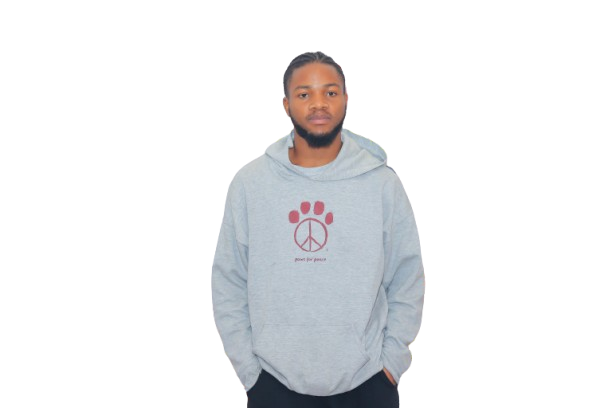
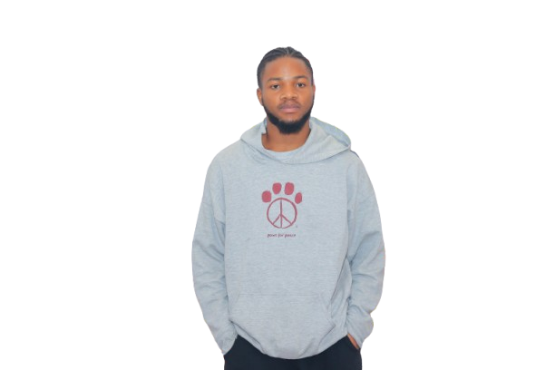

Hi, I'm Eugene! A passionate front-end developer with expertise in React, JavaScript, and modern UI frameworks (bootstrap and Tailwind). I curate responsive, accessible, and high perfomance web applications as solutions to real world problems. I am a strong advocate for user-centered design. I love collaboration and contributing to opensource projects.
1.5+ years developing websites and applications
User-centered design and scalable solutions
My academic journey and certifications
Technical University of Kenya
Specialized in Web Development, Version Control (Git and GitHub) and User Interface Design. I also learnt OOP fundamental, cybersecurity fundamentals and database management systems.
FreeCodeCamp
300-hour intensive program covering modern frontend technologies and responsive design principles.